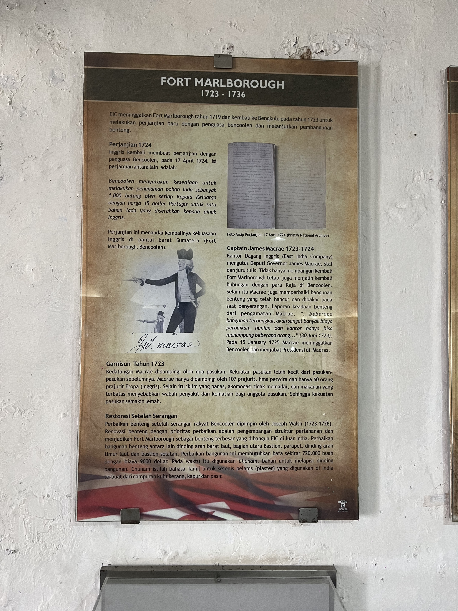
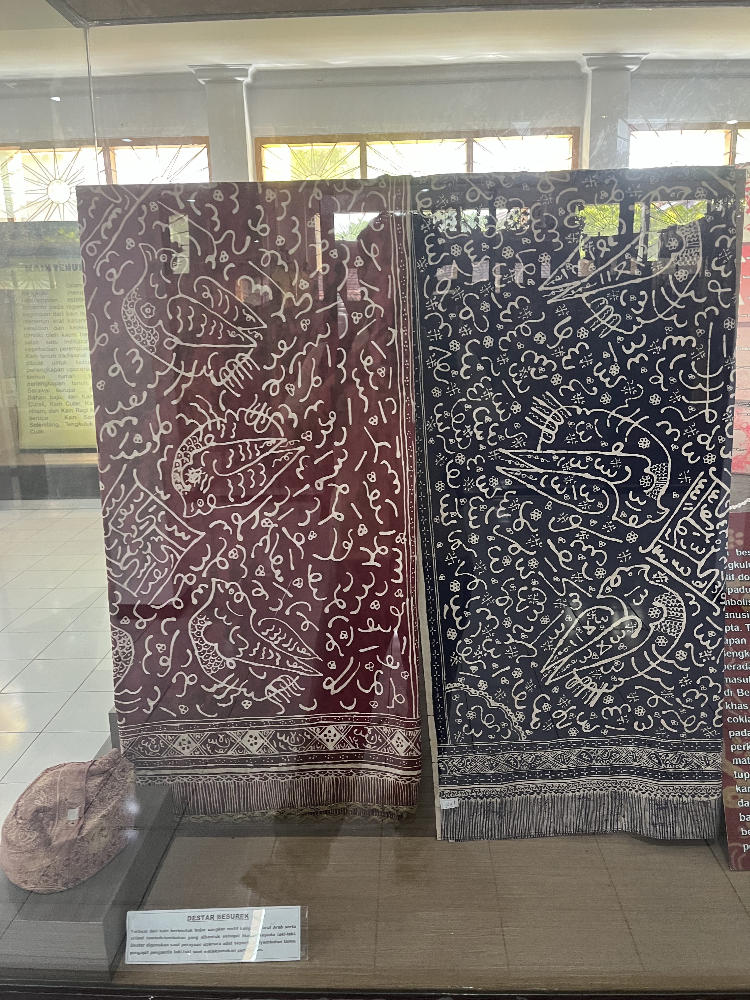
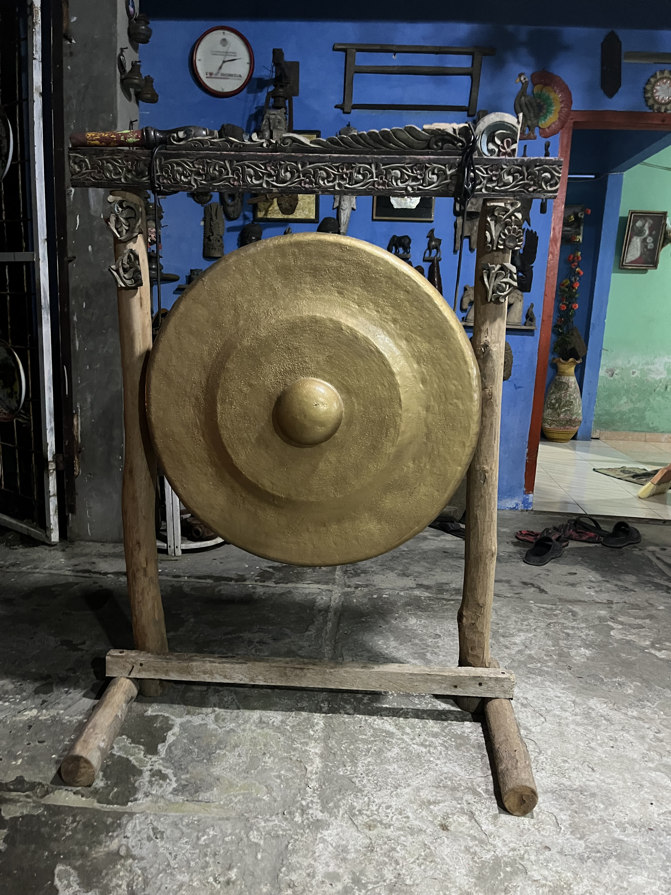
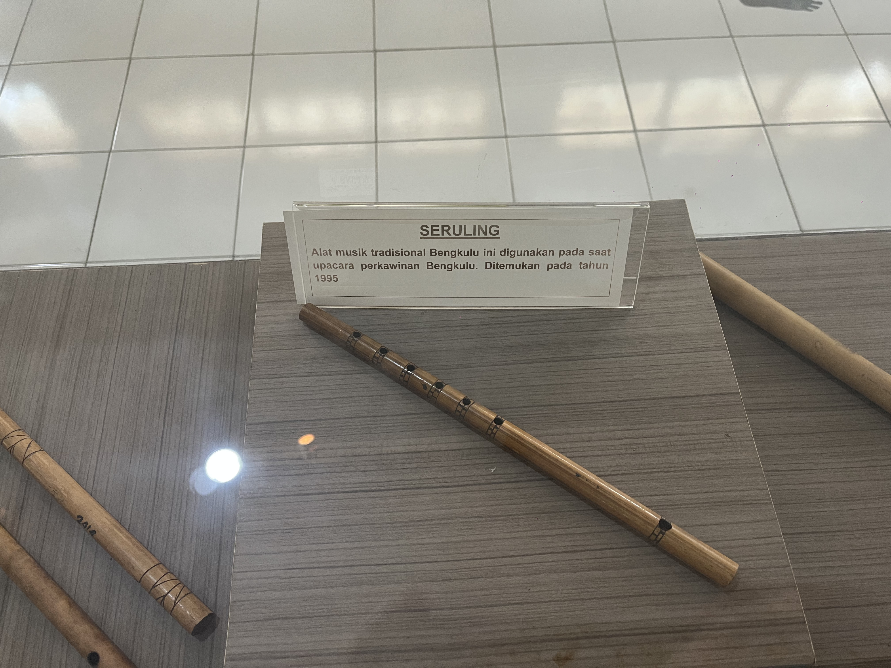
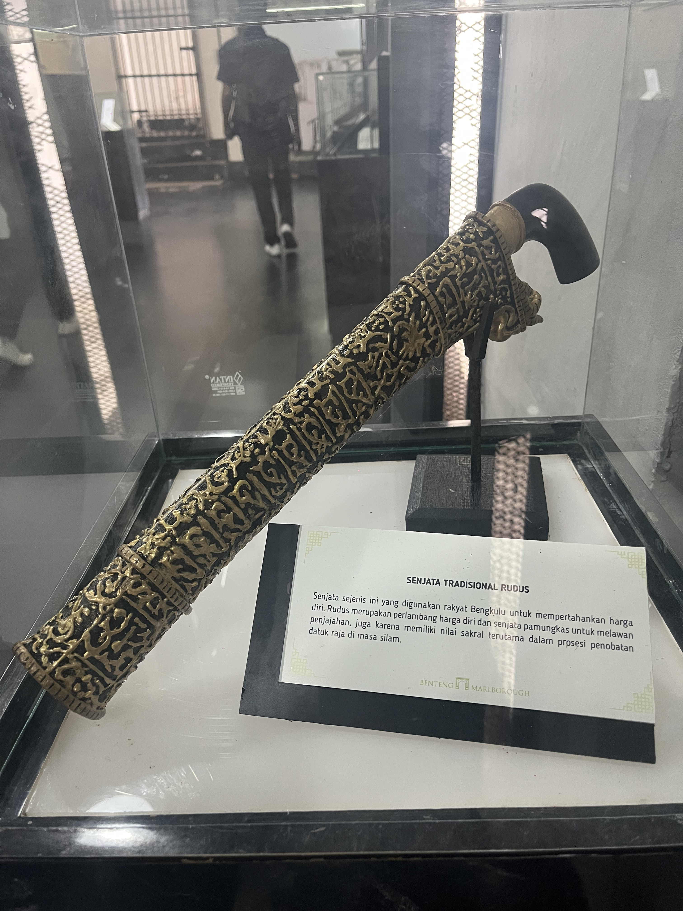
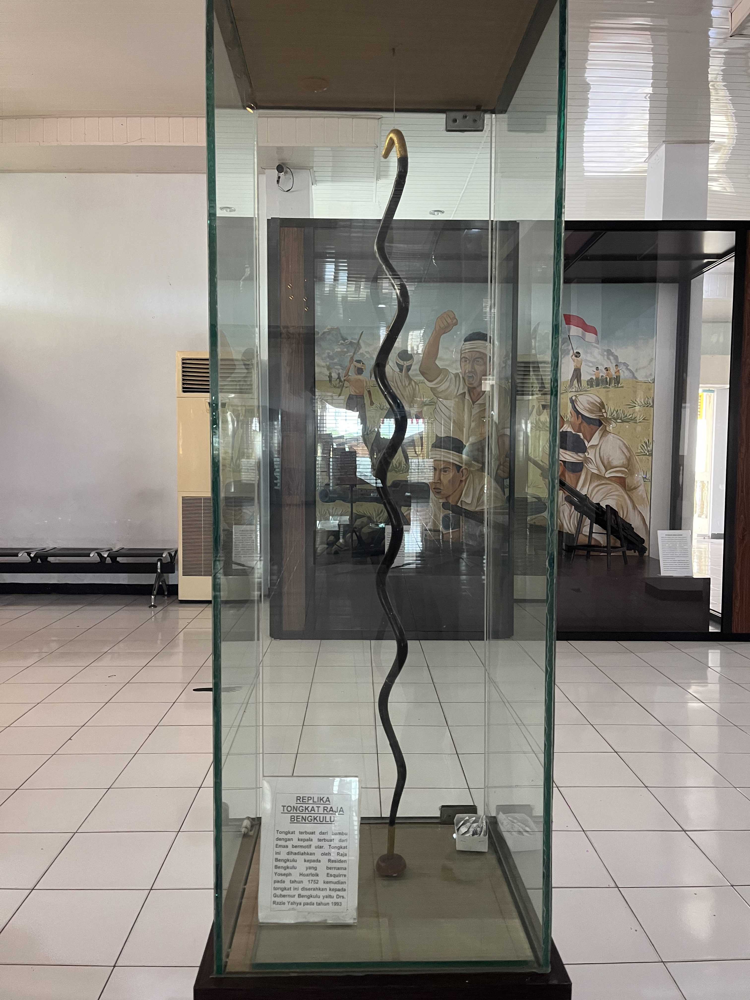
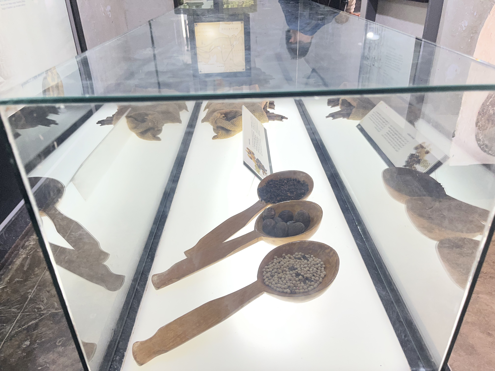
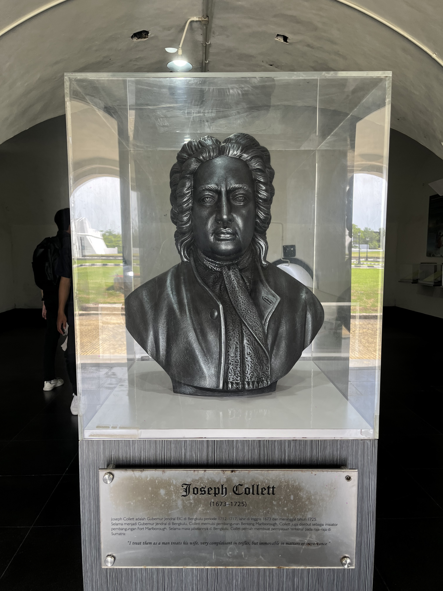

Semua Koleksi Museum
Arkeologi

Bongkahan Emas
Di dalam kotak kaca ini tersimpan sebuah bongkahan batu yang tampak sederhana, namun menyimpan kisah panjang.

Benteng (Fort)
Peninggalan struktur pertahanan masa kolonial.
Sejarah:Benteng ini digunakan sebagai pusat pertahanan dan pengawasan wilayah.
Detail: Dibangun menggunakan batu dan material kuat untuk menghadapi serangan.

Paku Benteng
Artefak material bangunan pertahanan sejarah.
Sejarah:Paku digunakan untuk menyusun struktur benteng kayu.
Detail:Menjadi bukti teknologi konstruksi masa lalu.
Etnografi

Batik Besurek
Koleksi tekstil tradisional dengan motif khas lokal.

Alat Tenun
Perkakas tradisional pembuatan kain masyarakat suku lokal. Alat tenun tradisional digunakan masyarakat Bengkulu sejak dahulu untuk membuat kain tenun khas daerah, terutama kain tenun suku Rejang dan Enggano.

Gong
Alat musik perkusi peninggalan budaya Nusantara.

Seruling
Alat musik tiup tradisional koleksi etnografi.

Rudus
Senjata tajam tradisional khas Bengkulu.

Tongkat Raja
Simbol kepemimpinan dan kekuasaan adat masa lalu.

Gading Gajah
Benda budaya bernilai tinggi dari material alam.

Rempah-rempah
Komoditas utama yang menjadi saksi sejarah perdagangan.
Filologi & Dokumentasi

Mesin Ketik
Alat dokumentasi dan administrasi masa lampau.

Sir Stamford
Catatan dan dokumentasi terkait tokoh sejarah di Bengkulu.

Joseph Collection
Arsip dan literatur sejarah masa lalu.